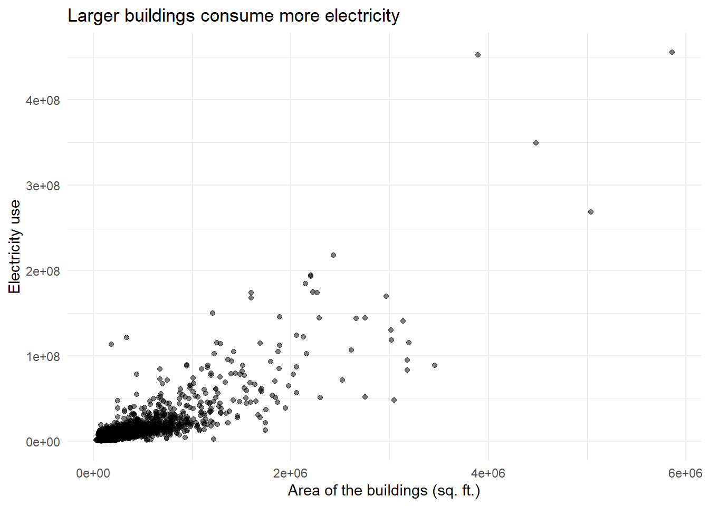
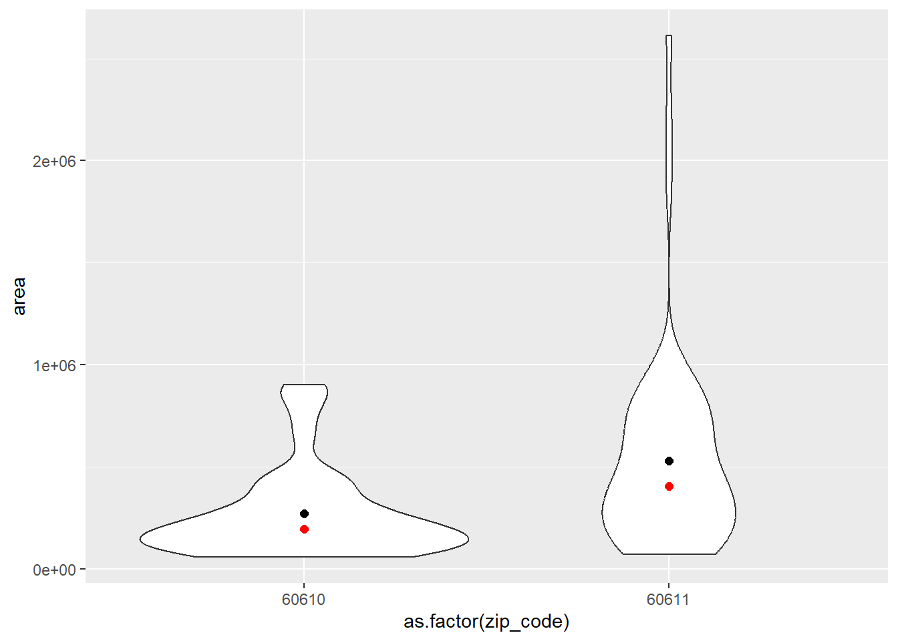

library(tidyverse)
df <- read_csv("./chicago_benchmarking.csv")Fundamentals of data visualization
Data visualization helps us mainly with two analytic goals:
- Making sense of data: identify relationships between variables, identify trends and patterns, and gather insights.
- Communicate findings from data analysis with various audience
We have already used the ggplot to help us with EDA. In this tutorial, we will focus more on making sense of data using plots; exploring the use of ggplot2, a popular data visualization library used by the R community.
Understanding relationships between variables
We will work with Chicago benchmarking data. Different cities publicly release detailed energy consumption data of commercial buildings via open data portals. The data represents a portion of the benchmarking data from Chicago.
Data visualization can help us understand relationship between variables. We will explore some of the relationships below.
Setting up
Closer look at the data
str(df)spc_tbl_ [3,285 × 12] (S3: spec_tbl_df/tbl_df/tbl/data.frame)
$ year : num [1:3285] 2020 2020 2020 2020 2020 2020 2020 2020 2020 2020 ...
$ id : num [1:3285] 232458 254616 103812 254073 254385 ...
$ prop_name : chr [1:3285] "Harper Square Cooperative" "Former Coyne College" "400 W Superior St" "Blue Moon Lofts" ...
$ zip_code : chr [1:3285] "60615" "60607" "60654" "60607" ...
$ primary_property_type: chr [1:3285] "Multifamily Housing" "Office" "Office" "Multifamily Housing" ...
$ area : num [1:3285] 627680 555524 130007 83000 98018 ...
$ built_year : num [1:3285] 1974 2019 1998 1908 2016 ...
$ energy_star_score : num [1:3285] 22 49 61 100 59 75 58 7 61 20 ...
$ electricity_use : num [1:3285] 16397683 28606428 6489281 1614582 4204724 ...
$ nat_gas_use : num [1:3285] 43537491 2199940 1493523 825007 2236782 ...
$ lat : num [1:3285] 41.8 41.9 41.9 41.9 41.8 ...
$ long : num [1:3285] -87.6 -87.7 -87.6 -87.7 -87.6 ...
- attr(*, "spec")=
.. cols(
.. year = col_double(),
.. id = col_double(),
.. prop_name = col_character(),
.. zip_code = col_character(),
.. primary_property_type = col_character(),
.. area = col_double(),
.. built_year = col_double(),
.. energy_star_score = col_double(),
.. electricity_use = col_double(),
.. nat_gas_use = col_double(),
.. lat = col_double(),
.. long = col_double()
.. )
- attr(*, "problems")=<externalptr> Question 1: Do larger buildings consume more electricity?
To answer that simple question, let’s plot a simple line graph of area vs electricity use. The simplest code that produces that plot using ggplot follows.
ggplot(df) +
aes(x= area, y = electricity_use)+
geom_point()
Breakdown of the syntax:
- ggplot() function, a part of the ggplot() library under tidyverse is used to create ggplot
- df is the dataset we use
- aes() is short for aesthetics. In this we stated what we want to plt in X and Y axes
- geom_line() signifies that we want to make a line graph
In the graph, we can see that larger buildings in general do consume more electricity. But this isn’t a chart you would publish in a newspaper. Let’s work step by step to improve the chart.
Adding title and axes labels
ggplot(df) +
aes(x= area, y = electricity_use)+
geom_point()+
labs(title = "Larger buildings consume more electricity",
x = "Area of the buildings (sq. ft.)",
y = "Electricity use")This chart is now much more readable and informative.
Instead of typing the whole code to plot every time we add a new feature, we can assign the basic plot to a variable and build from there.
p <- ggplot(df) +
aes(x= area, y = electricity_use)+
geom_point(alpha=0.5)+ #alpha is for the transparency of the dots
labs(title = "Larger buildings consume more electricity",
x = "Area of the buildings (sq. ft.)",
y = "Electricity use")Now we can display the plot using only the object variable.
pLet’s make the plot look better. We can use predefined themes.
p <- p + theme_minimal()
p
What’s wrong with the units on axes labels?
The units are displayed in scientific notation (e.g. 2e+06) since the values are large. You can change that to more readable values with commas. We can use “scales” package for that.
library(scales)
Attaching package: 'scales'The following object is masked from 'package:purrr':
discardThe following object is masked from 'package:readr':
col_factorp <- p +
scale_x_continuous(labels = comma) +
scale_y_continuous(labels = comma)
pNow we can see the units are in the order of millions.
Adding a trend line
p <- p + geom_smooth()
p`geom_smooth()` using method = 'gam' and formula = 'y ~ s(x, bs = "cs")'Now that we know the fundamental elements of a ggplot, let’s work with different types of plots suitable of various data types.
Creating histograms to assess distribution of data
We know that larger buildings generally consume more electricity. Now, let’s evaluate how building sizes are distributed in Chicago. For that we create histograms.
Histograms help us understand:
- Distribution of data
- Grouping of data
- Identify central tendency (mean, median), spread, shape
- Identify outliers/anomalies
ggplot(df, aes(x = area)) +
geom_histogram() +
labs(title = "Distribution of house sizes", x = "Values", y = "Frequency") +
scale_x_continuous(labels = comma) +
theme_minimal()`stat_bin()` using `bins = 30`. Pick better value with `binwidth`.
We can see that most of the buildings are smaller, less than million square feet.
Let’s take a closer look at the distribution of smaller houses. You can notice that histogram separates data into groups, and plots the frequency of number of observations in the group as bars. The size of the group is known as bins.
binwidth is used to change the size of bins. The units of binwidth are units of the data we plot.
ggplot(df, aes(x = area)) +
geom_histogram(binwidth = 1000) +
labs(title = "Distribution of house sizes", x = "Values", y = "Frequency") +
scale_x_continuous(labels = comma) +
theme_minimal()If we only wanted to look at houses lesser than 500,000 sq ft.
ggplot(df %>% filter(area < 500000), aes(x = area)) +
geom_histogram(binwidth = 1000) +
labs(title = "Distribution of house sizes", x = "Values", y = "Frequency") +
scale_x_continuous(labels = comma) +
theme_minimal()In this example, I added a filter to the original dataframe df inside ggplot code. This works in R, but it is not an ideal practice.
Visualizing distribution using box plots
Another alternative to visualize distribution is using box plots. It shows mean, median, quartiles, and outliers.
# Create a box plot for the mpg column
ggplot(df, aes(x = "", y = area)) +
geom_boxplot() +
labs(title = "Box Plot of area", x = "", y = "area")Bar charts to plot frequency of categorical data
Bar charts help us visualize categorical data such as colors, zip codes, cities, etc.
Number of buildings in each zip code
bldg_zip_df <- df |>
group_by(zip_code) %>%
summarise(num_buildings = n())Bar chart
ggplot(bldg_zip_df , aes(x = zip_code, y = num_buildings)) +
geom_bar(stat = "identity") +
labs(title = "Number of buildings in each zipcode",
x = "zip code",
y = "number of houses") +
theme_void()Making it more readable by converting it to a horizontal bar chart instead of a vertical one, and arranging bars by descending order of number of buildings
ggplot(bldg_zip_df , aes(x = reorder(zip_code, num_buildings), y = num_buildings)) +
geom_bar(stat = "identity") +
labs(title = "Number of buildings in each zipcode",
x = "zip code",
y = "number of buildings") +
theme_minimal()+
coord_flip() #flips the chart from vertical to horizontalp <- bldg_zip_df |>
top_n(20, num_buildings) |>
mutate(zip_code = reorder(zip_code, num_buildings)) |>
ggplot(aes(x = zip_code, y = num_buildings)) +
geom_bar(stat = "identity", fill = 'steelblue') +
labs(title = "Number of buildings in each zipcode",
x = "zip code",
y = "number of buildings") +
theme_minimal()+
coord_flip()
pAdding text labels
p + geom_text(aes(label = num_buildings), hjust = -0.1) # add labelsCreating data art using ggplot
For demonstration purposes only.
# Define the parameters for the polar rose
k <- 7
n <- 1000
# Create a sequence of angles from 0 to 2pi
theta <- seq(0, 2 * pi, length.out = n)
# Create the polar rose
r <- sin(k * theta)
x <- r * cos(theta)
y <- r * sin(theta)
# Create a data frame with the x and y coordinates
data <- data.frame(x = x, y = y)
# Create the plot
ggplot(data, aes(x = x, y = y)) +
geom_path(color = "steelblue", size = 1) +
theme_void() +
coord_fixed()Warning: Using `size` aesthetic for lines was deprecated in ggplot2 3.4.0.
ℹ Please use `linewidth` instead.Comparing distribution across zip codes
Another alternative is Violin plots that combine the advantages of histogram and box plots.
df2 <- df |>
filter(year == 2020) |>
filter(zip_code == c(60611, 60610))
df2# A tibble: 104 × 12
year id prop_name zip_c…¹ prima…² area built…³ energ…⁴ elect…⁵ nat_g…⁶
<dbl> <dbl> <chr> <chr> <chr> <dbl> <dbl> <dbl> <dbl> <dbl>
1 2020 160208 The Jame… 60611 Hotel 7.2 e4 2000 26 7.09e6 6.56e6
2 2020 237384 Maple To… 60610 Multif… 1.35e5 2005 70 4.40e6 8.69e5
3 2020 252031 57135-Ch… 60611 Hotel 1.77e5 1987 71 5.52e6 1.26e7
4 2020 103816 AMA Plaza 60611 Office 1.88e6 1971 75 8.50e7 4.18e7
5 2020 105697 Dearborn… 60610 Multif… 7.92e4 1929 89 1.35e6 7.40e6
6 2020 227382 Drake To… 60611 Multif… 2.76e5 1928 19 4.44e6 3.79e5
7 2020 243913 990 Nort… 60611 Multif… 3.31e5 1973 12 1.27e7 9.72e6
8 2020 173642 230 E Oh… 60611 Office 7.53e4 1917 51 3.12e6 3.13e6
9 2020 256655 The Oliv… 60610 Multif… 9.14e4 1924 100 1.93e6 3.31e6
10 2020 244017 River Pl… 60611 Multif… 8.93e5 1976 36 1.94e7 4.78e7
# … with 94 more rows, 2 more variables: lat <dbl>, long <dbl>, and abbreviated
# variable names ¹zip_code, ²primary_property_type, ³built_year,
# ⁴energy_star_score, ⁵electricity_use, ⁶nat_gas_useLet’s compare two zip codes with the most number of buildings on the distribution of sizes of the buildings.
ggplot(df2, aes(x = as.factor(zip_code), y = area)) +
geom_violin() +
stat_summary(fun.y=mean, geom="point", size=2) + #add mean
stat_summary(fun.y=median, geom="point", size=2, color="red") # add medianWarning: The `fun.y` argument of `stat_summary()` is deprecated as of ggplot2 3.3.0.
ℹ Please use the `fun` argument instead.
ggplot(df2, aes(x = as.factor(zip_code), y = area)) +
geom_boxplot()